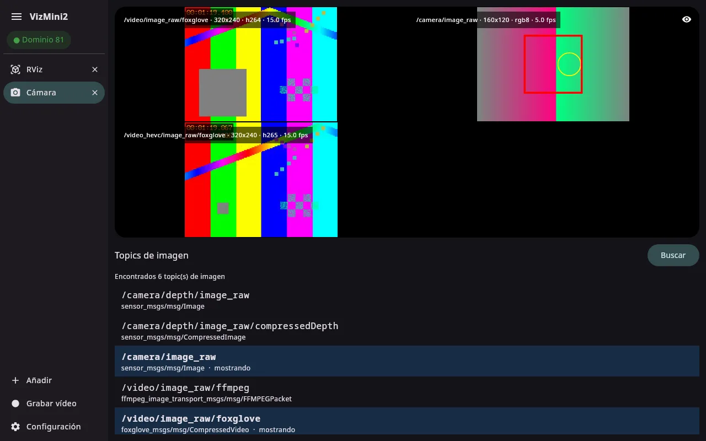

La app de PC
VizMini2 también funciona en un PC con Linux o Windows, con las mismas pestañas que el móvil en una ventana redimensionable: cómoda junto a la terminal del robot, en una pantalla grande del laboratorio o con ratón y teclado para sesiones largas. Tus pestañas, dashboards y perfiles pasan del móvil al PC y al revés (expórtalos, o vincula una cuenta).
Instalación
Funciona en Ubuntu 20.04 o posterior (x86-64, o cualquier Linux con glibc 2.31 o posterior) con OpenGL. No hace falta ROS 2 en el PC: la app trae su propio DDS. Sirve cualquier distro de ROS 2 en la red (Foxy, Humble, Jazzy, Kilted, Lyrical…).
Con apt (recomendado): añade una vez el repositorio de VizMini2 y
sudo apt upgradetrae cada versión nueva como cualquier otro paquete:wget -qO- https://github.com/VizMini2/VizMini2/releases/download/apt/vizmini2-archive-keyring.gpg | sudo tee /usr/share/keyrings/vizmini2-archive-keyring.gpg > /dev/null echo "deb [arch=amd64 signed-by=/usr/share/keyrings/vizmini2-archive-keyring.gpg] https://github.com/VizMini2/VizMini2/releases/download/apt ./" | sudo tee /etc/apt/sources.list.d/vizmini2.list sudo apt update && sudo apt install vizmini2
El .deb (de la página de versiones):
sudo apt install ./vizmini2_*_amd64.deb
Al instalarlo también se añade el repositorio de VizMini2 (la primera vez, salvo que apt ya lo tenga), así que a partir de entonces
sudo apt upgradetrae las versiones nuevas. Si no lo quieres, borra/etc/apt/sources.list.d/vizmini2.list: no se vuelve a añadir.Luego abre VizMini2 desde el menú de aplicaciones, o ejecuta
/opt/vizmini2/bin/vizmini2.sudo apt remove vizmini2la desinstala (tus ajustes se quedan en tu carpeta personal) ysudo apt purge vizmini2quita también el repositorio.El .tar.gz: la misma app sin instalarla. Descomprímelo donde quieras y ejecuta
vizmini2/bin/vizmini2.Como paquete de ROS 2 (Linux, Jazzy o posterior), compilado desde el código fuente. Se compila y funciona con el Java del sistema (17 o posterior;
rosdep installinstaladefault-jdk), y la primera compilación necesita internet: Gradle descarga sus dependencias y las librerías nativas precompiladas. En Humble, el Java de Ubuntu 22.04 (11) es demasiado antiguo: usa allí el.deb, que se conecta igual a robots con Humble.cd ~/ros2_ws/src && git clone https://github.com/VizMini2/VizMini2.git vizmini2_src cd ~/ros2_ws && rosdep install --from-paths src --ignore-src -y colcon build --packages-select vizmini2 && source install/setup.bash ros2 run vizmini2 vizmini2
La primera vez toma el
ROS_DOMAIN_IDde la terminal.
Extras recomendados: ffmpeg (topics de vídeo H.264/H.265 y grabar la ventana) y
libnotify-bin (notificaciones de escritorio de las alertas):
sudo apt install ffmpeg libnotify-bin
En Windows
Funciona en Windows 10 u 11 (64 bits). Como en Linux, no hace falta ROS 2 en el PC.
El .msi (de la página de versiones): ábrelo y sigue los pasos. Se instala para tu usuario, sin pedir administrador, en %LOCALAPPDATA%\VizMini2 (en el segundo paso puedes elegir otra carpeta), con un acceso directo en el escritorio y una carpeta VizMini2 en el menú Inicio. El instalador no está firmado, así que Windows puede avisar antes de abrirlo («Windows protegió su PC» o una advertencia de seguridad): elige Más información → Ejecutar de todas formas, o Ejecutar. Para actualizar, instala el
.msinuevo igual; se desinstala desde Configuración → Aplicaciones. Ninguna de las dos cosas toca tus ajustes, bags ni vídeos.El .zip: la misma app sin instalarla. Descomprímelo donde quieras y abre VizMini2\VizMini2.exe.
La primera vez que se conecta, el Firewall de Windows pregunta si VizMini2 puede usar la red: permítelo. Si tu red está marcada como Pública en Windows, puede que no aparezcan los robots; márcala como Privada (Configuración → Red e Internet → tu red) o usa las IPs del robot o un Discovery Server en Red.
Extra recomendado: ffmpeg, para los topics de vídeo H.264/H.265 y grabar la ventana:
winget install ffmpeg
Si no tienes winget, descárgalo de ffmpeg.org y añade su
carpeta bin al PATH. Sin él, la app te lo dice cuando lo necesita.
La ventana
Barra lateral (izquierda): la etiqueta de conexión (Dominio N), tus pestañas, Añadir, Grabar vídeo y Configuración. El botón ☰ la pliega a solo iconos (pasa el ratón por encima de uno para ver su nombre).
Haz clic en una pestaña para abrirla; la × la elimina, después de preguntar (un dashboard se lleva sus widgets).
Clic derecho en una pestaña, como la pulsación larga del móvil: Renombrar, Duplicar (una copia justo debajo, con sus widgets), Eliminar, y exportarla como fichero de VizMini2 (para añadirla en otro PC o móvil con Añadir → Importar) o, cuando tiene algo que entiendan, como fichero de RViz 2, layout de paneles o layout de gráficas (Importar y exportar).
Añadir abre el catálogo: los mismos tipos de pestaña y dashboards ya montados que en el móvil, e Importar una pestaña, un fichero de RViz o un layout… con un diálogo de ficheros.
Configuración: red (dominio, middleware, Zenoh, foxglove_bridge, interfaces), apariencia (idioma, tema, tamaño de la interfaz), la cuenta, las variables de topics y los perfiles de robot. Mira Red.

Sin robot: la demo
Configuración → Iniciar demo ejecuta el mismo robot simulado que el móvil, solo en este
ordenador (su propio dominio, el 231, y solo la interfaz local, así que no llega nada a tu red): una
sala con mapa, láser, cámara (también como vídeo H.264, con ffmpeg), odometría, diagnósticos,
servicios, una acción, un nodo lifecycle y un controller manager de ros2_control, con pestañas y un
dashboard para probarlo todo. Condúcelo desde Conducir. Mientras está en marcha, Salir de la
demo se queda arriba en la barra lateral; al salir vuelven tus pestañas y tu conexión.
vizmini2 --demo (VizMini2.exe --demo en Windows) arranca directamente en ella; si cierras la
app en modo demo, vuelve a abrirse en modo demo.
Ratón y teclado
Vista 3D: arrastra para orbitar, arrastra con el botón derecho o el central (o Mayús + arrastrar) para desplazar, y la rueda para el zoom; la barra tiene todas las herramientas (en el móvil algunas están en el menú de la regla). En el grafo de nodos y el árbol TF, la rueda hace zoom y un doble clic encaja la vista.
Dashboards: Ctrl+E edita, Ctrl+Z deshace, Esc sale de la edición, Ctrl+0 restablece el zoom y Ctrl + rueda hace zoom. Arrastra topics desde la pestaña Topics (o campos de un mensaje) a los widgets o a las gráficas.
Teleop: arrastra el joystick con el ratón, o conduce con W A S D o las flechas; Espacio es STOP.
Grabar la ventana: Ctrl+Mayús+R empieza y para.
Grabar la ventana
Grabar vídeo en la barra lateral (o Ctrl+Mayús+R) graba toda la ventana, vista 3D
incluida, en un MP4 en ~/Vídeos/VizMini2 (Vídeos\VizMini2 en Windows); mientras graba, el
botón muestra el tiempo y sirve para parar. Cuando se guarda el vídeo, una notificación dice dónde
(en Windows, al hacer clic en ella se muestra el vídeo en el Explorador de archivos). Necesita
ffmpeg. Para enseñar a alguien qué hizo el robot, suele ser más rápido que un bag.
Notificaciones
El PC muestra las alertas (tus reglas de topics, la pérdida de contacto con
el robot y los diagnósticos en ERROR) como notificaciones de escritorio mientras VizMini2 está
abierta: con notify-send en Linux, y desde el icono de VizMini2 en el área de notificaciones en
Windows (o en un escritorio Linux sin notify-send). Los tres interruptores están arriba en la
pestaña Alertas; vienen activados.
Móvil y PC: qué cambia
Móvil |
PC |
|
|---|---|---|
Pestañas |
Todas |
Todas |
Robot de demo |
Sí |
Sí (Configuración, o |
Conducir |
Joysticks táctiles, mando |
Ratón, teclado |
Ficheros (bags, mapas, exportaciones) |
Menú de compartir |
Diálogo de ficheros; bags en ~/.local/share/vizmini2/bags (Windows: %LOCALAPPDATA%\VizMini2 Data\bags) |
Renombrar o duplicar una pestaña |
Pulsación larga |
Clic derecho |
Grabar la pantalla |
Movies/VizMini2 |
~/Vídeos/VizMini2 (Windows: Vídeos\VizMini2), necesita ffmpeg |
Alertas en segundo plano |
Sí, con la conexión en segundo plano |
Mientras la ventana está abierta |
Informes de fallos |
Firebase Crashlytics |
Ninguno |
Dónde guarda las cosas
Ajustes, pestañas y perfiles: ~/.config/vizmini2
Bags: ~/.local/share/vizmini2/bags
Cachés (vista 3D, librerías nativas, teselas del mapa GPS): ~/.cache/vizmini2
Vídeos de la pantalla: ~/Vídeos/VizMini2
Borrar ~/.config/vizmini2 empieza de cero.
En Windows:
Ajustes, pestañas y perfiles: %APPDATA%\VizMini2
Bags: %LOCALAPPDATA%\VizMini2 Data\bags
Cachés (vista 3D, librerías nativas, teselas del mapa GPS): %LOCALAPPDATA%\VizMini2 Data\Cache
Vídeos de la pantalla: Vídeos\VizMini2
Borrar %APPDATA%\VizMini2 empieza de cero. Desinstalar VizMini2 no borra ninguna de estas carpetas.
Línea de comandos
vizmini2 (o ros2 run vizmini2 vizmini2) acepta algunas opciones, sobre todo para scripts y
para diagnosticar problemas:
Opción |
Qué hace |
|---|---|
|
Arranca en el dominio de ROS N (y lo guarda). |
|
Abre esa pestaña: su nombre, o la primera pestaña de un tipo ( |
|
Sin ventana: se conecta, espera unos segundos, lista lo que ve en la red y sale (código 0 si ha visto otro nodo, 1 si no). Útil para probar la red desde una terminal. |
|
Sin ventana: qué dominios de ROS tienen nodos en la red. |
|
Abre la ventana, espera unos segundos, la graba durante N segundos (5 por defecto) y sale. Necesita ffmpeg. |
|
Guarda una captura de una pestaña sin abrir ventana (1200×800 tras 4 s por defecto; también
con |
|
Arranca en modo demo, con el robot simulado. |
|
Cambia un ajuste de la pestaña de |
|
Reproduce ese bag en la red en bucle en cuanto se conecta, como Reproducir en la pestaña Bags. |
|
Añade un fichero de pestaña de VizMini2, un fichero de RViz 2 o un layout de paneles o de gráficas, lo abre, e imprime lo que no se ha podido pasar. |
|
Añade el dashboard Showcase (casi todos los widgets; pruébalo con la demo) y sale: abre la app después. |
En Windows el programa es VizMini2.exe. Es un programa de ventanas, así que una terminal no muestra lo que imprime: redirígelo a un fichero, por ejemplo en PowerShell:
Start-Process "$env:LOCALAPPDATA\VizMini2\VizMini2.exe" -ArgumentList '--check' `
-RedirectStandardOutput check.txt -Wait -NoNewWindow; Get-Content check.txt
Siguiente: Conectar con tu robot para ver tu robot, y luego las pestañas.